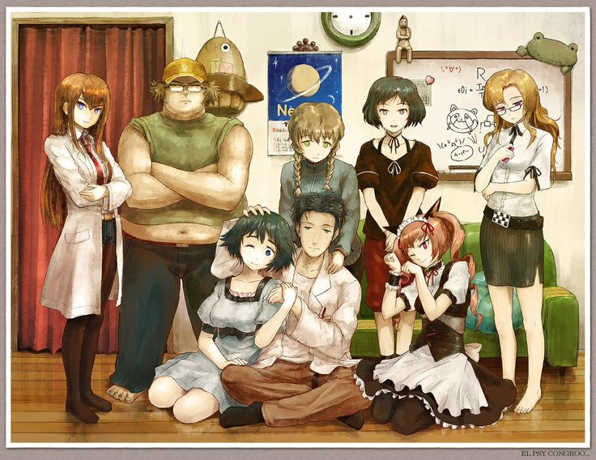

Mundo dos Animes
Bem-vindo ao Mundo dos Animes
Aqui você encontra informações e curiosidades sobre três animes incríveis que marcaram gerações.
Evangelion
Um anime psicológico e cheio de ação, com mechas e dramas intensos.

Steins;Gate
Viagens no tempo e emoção em uma das melhores histórias da ficção científica dos animes.
Monogatari
Um anime visualmente único, cheio de diálogos intensos e personagens enigmáticos.